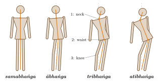
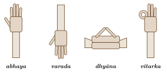
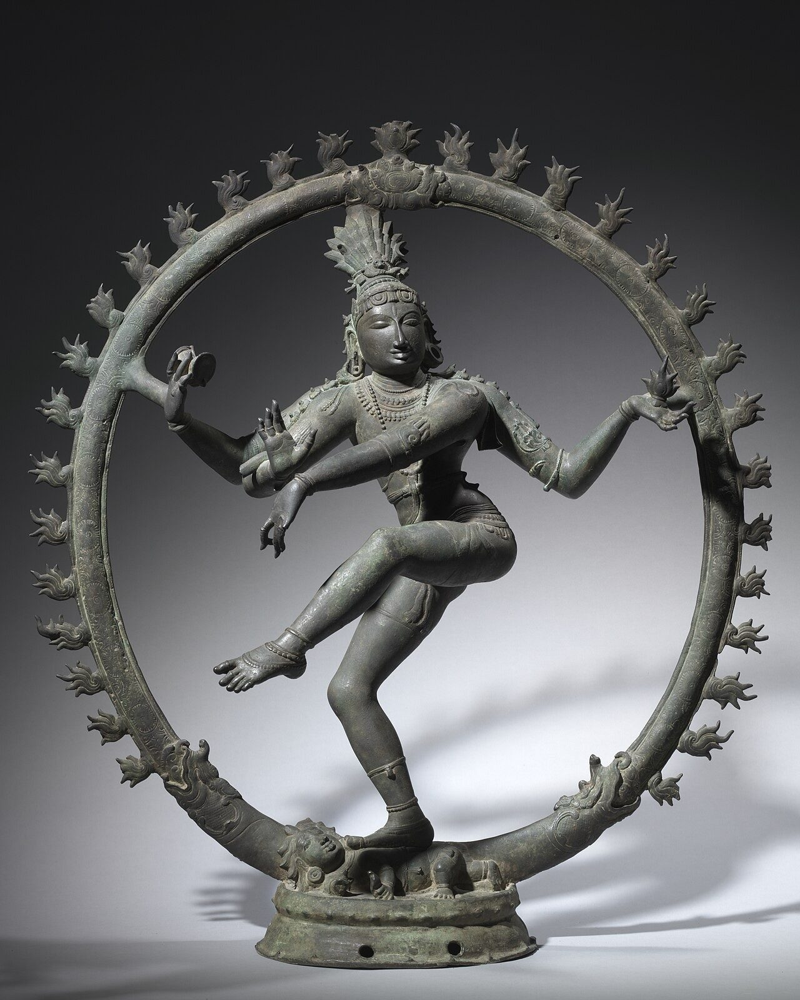

Chapter 12: Iconography: The Forms of the Gods, Buddhas and Jinas¶
12.1 Reading an Image¶
Indian religious images communicate through a shared visual vocabulary. The posture of the figure, the number of its heads and arms, the gestures of its hands, the objects it holds, its ornaments and dress, its mount and its attendants together identify the deity and the particular form or episode represented. This vocabulary is set out in the image-making texts (Chapter 11) and in the Purāṇas and āgamas, and it was used across religious traditions: Buddhist and Jain images share many postures, gestures and ornaments with Hindu ones.
The iconographic rules were never uniform. They changed over time, as new forms of deities emerged and old ones were reinterpreted, and they differed between regions and sects. A modern reader should therefore treat the descriptions below as typical, not as fixed laws; the standard reference works, Gopinatha Rao for Hindu iconography, Banerjea for its development, Bhattacharyya for Buddhist and U. P. Shah for Jain iconography, document the many variants (Gopinatha Rao 1914; Banerjea 1956; Bhattacharyya 1924; Shah 1987).
12.2 Postures¶
12.2.1 Standing Postures¶
The texts distinguish standing postures by the number of bends (bhaṅga) in the body (Table 12.1 and Figure 12.1).
| Posture | Form | Typical use |
|---|---|---|
| samabhaṅga | Upright and symmetrical, weight evenly distributed | Principal images of Viṣṇu, Sūrya, Jinas standing in meditation |
| ābhaṅga | A slight bend of the body | Many deities, Buddhas and bodhisattvas |
| tribhaṅga | Three bends, at neck, waist and knee, giving an S-shaped curve | Goddesses, attendants, Kṛṣṇa playing the flute, many Chola bronzes |
| atibhaṅga | An exaggerated, dynamic bend | Fierce and dancing forms, such as Naṭarāja and Kālī |

12.2.2 Seated Postures¶
The principal seated postures are listed in Table 12.2.
| Posture | Form and typical use |
|---|---|
| padmāsana | Legs crossed with both soles turned upwards; Buddhas and Jinas in meditation, Brahmā, Lakṣmī on the lotus |
| vajraparyaṅka | A form of the same with legs firmly locked; seated Buddhas |
| ardhaparyaṅka, lalitāsana | One leg folded on the seat, the other pendant; seated goddesses, bodhisattvas, Śiva with Pārvatī |
| vīrāsana | One leg folded over the other; seated forms of Viṣṇu and others |
| sukhāsana | At ease, one leg raised, sometimes with an arm resting on it |
| utkuṭikāsana | Squatting with the knees raised, often held by a meditation band (yogapaṭṭa); Yoga-Narasiṃha, Yoga-Dakṣiṇāmūrti |
| pralambapādāsana | Seated on a throne with both legs pendant; Maitreya and some Buddha images |
12.3 Gestures¶
Hand gestures (mudrā, hasta) are among the most important signs. Several are shared by Hindu, Buddhist and Jain images; others belong to particular deities or to dance, from which iconography borrowed much of its vocabulary (Table 12.3; four are drawn in Figure 12.2).
| Gesture | Form | Meaning and use |
|---|---|---|
| abhaya | Hand raised, palm outward, fingers up | “Do not fear”: protection; very many deities, Buddhas |
| varada | Hand lowered, palm outward | Granting a boon; many deities, especially goddesses and bodhisattvas |
| dhyāna | Hands resting in the lap, palms upward, one on the other | Meditation; Buddhas, Jinas, ascetic forms of Śiva |
| bhūmisparśa | Right hand reaching down to touch the earth | “Calling the earth to witness”: the Buddha’s enlightenment |
| dharmacakra | Both hands at the chest, fingers forming circles | “Turning the wheel of the law”: the Buddha’s first sermon |
| vitarka, vyākhyāna | Thumb and index finger joined in a circle, other fingers raised | Teaching or argument; Buddhas, Dakṣiṇāmūrti (in this form often called cinmudrā) |
| añjali | Palms joined | Salutation and devotion; devotees, Garuḍa, saints |
| kaṭaka, kaṭakāmukha | Fingers curled as if holding a flower | Holding an attribute; goddesses |
| sūci, tarjanī | Index finger pointing or raised | Pointing; threatening |
| kaṭyavalambita | Hand resting on the hip | Relaxed standing figures |
| gajahasta | Arm swung across the body like an elephant’s trunk | Dancing Śiva (Naṭarāja) |

12.4 Attributes, Mounts and Ornaments¶
12.4.1 Attributes¶
Multi-armed images hold attributes (āyudha, “weapons”, and other emblems) that identify them. Many attributes are shared, so that identification depends on their combination (Table 12.4).
| Attribute | Principal deities |
|---|---|
| cakra (discus) | Viṣṇu and his forms; Vaiṣṇavī |
| śaṅkha (conch) | Viṣṇu; Vaiṣṇavī |
| gadā (club) | Viṣṇu; Vaiṣṇavī; Hanumān |
| padma (lotus) | Viṣṇu, Lakṣmī, Sūrya (a lotus in each hand), Padmapāṇi |
| triśūla (trident) | Śiva; Durgā |
| ḍamaru (hourglass drum) | Śiva, especially Naṭarāja |
| paraśu (axe) | Śiva; Gaṇeśa; Paraśurāma |
| mṛga (deer) | Śiva (held in a raised hand in South Indian images) |
| pāśa (noose) and aṅkuśa (goad) | Gaṇeśa; Varuṇa (noose); Lalitā (noose and goad) |
| kamaṇḍalu (water-pot) and akṣamālā (rosary) | Brahmā; Sarasvatī; ascetic forms; Maitreya |
| pustaka (manuscript) | Brahmā; Sarasvatī; Mañjuśrī |
| vīṇā (lute) | Sarasvatī; Vīṇādhara Śiva |
| vajra (thunderbolt) | Indra; Vajrapāṇi and many Vajrayāna deities |
| khaḍga (sword) | Durgā; Mañjuśrī; fierce deities |
| kapāla (skull-cup) | Bhairava; fierce goddesses; Vajrayāna deities |
| dhanus and bāṇa (bow and arrow) | Rāma; Śiva as Tripurāntaka; Durgā; Kāma |
Modern devotional and popular books attach symbolic meanings to many of these attributes, such as the lotus as purity or the noose as attachment. Some of these interpretations are found in Purāṇas and later commentaries; others are recent. They should not be confused with the descriptive rules of the iconographic texts.
12.4.2 Mounts¶
Many deities have an animal mount or emblem (vāhana), shown beneath or beside the image (Table 12.5).
| Deity | Mount |
|---|---|
| Śiva | Nandī, the bull |
| Viṣṇu | Garuḍa, the eagle-man |
| Brahmā | haṃsa, the goose |
| Sarasvatī | haṃsa; in some regions the peacock |
| Lakṣmī | lotus; in Bengal the owl |
| Durgā | lion (in some regions tiger) |
| Gaṇeśa | rat or mouse |
| Kārttikeya (Skanda) | peacock |
| Sūrya | chariot drawn by seven horses |
| Yama | buffalo |
| Gaṅgā; Yamunā | makara (crocodile-like monster); tortoise |
12.4.3 Crowns and Ornaments¶
The headdress is an important sign. The tall, cylindrical kirīṭamukuṭa is worn by Viṣṇu and by kings; the jaṭāmukuṭa, a crown of matted locks, by Śiva, Brahmā and ascetic figures; the smaller, tiered karaṇḍamukuṭa by goddesses and attendant deities. Images are adorned with ear ornaments (kuṇḍala), necklaces (hāra), armlets (keyūra), bracelets (kaṅkaṇa), a waistband (udarabandha) and girdle (mekhalā), anklets (nūpura), the sacred thread (yajñopavīta), and, in some periods, a chain crossing the chest (channavīra). A halo or aureole (prabhāmaṇḍala, prabhāvalī) surrounds the head or the whole figure. Buddhas wear only the monastic robe and have a cranial protuberance (uṣṇīṣa), elongated ear lobes and a tuft of hair between the eyebrows (ūrṇā), signs from the list of thirty-two marks of a great man (mahāpuruṣalakṣaṇa); Jinas are unadorned.
12.5 Viṣṇu¶
The standard image of Viṣṇu, established by the Gupta period, is a standing, four-armed figure wearing a tall crown, holding the discus, conch, club and lotus (the lotus sometimes replaced by a gesture). The Purāṇas and the Rūpamaṇḍana name twenty-four forms (caturviṃśatimūrti), from Keśava to Kṛṣṇa, distinguished solely by the order in which the four attributes are held in the four hands (Gopinatha Rao 1914).
The Pāñcarātra tradition describes five modes of the deity’s presence: the supreme (para); the four emanations (vyūha), Vāsudeva, Saṅkarṣaṇa, Pradyumna and Aniruddha, of whom Vāsudeva possesses all six divine qualities while each of the others manifests two; the incarnations (vibhava); the inner controller (antaryāmin); and the consecrated image (arcā), which in this theology is a full and gracious form of God. Images of the vyūhas, including composite four-faced images from Kashmir and Mathurā, testify to the early importance of this doctrine.
Viṣṇu reclining on the serpent Śeṣa (Anantaśayana or Śeṣaśāyin), with Brahmā emerging on a lotus from his navel, is one of the great themes of Indian sculpture, from the Gupta relief at Deogaṛh to the colossal image at Śrīraṅgam. The incarnations (avatāra) are listed in different ways; the familiar list of ten (fish, tortoise, boar, man-lion, dwarf, Paraśurāma, Rāma, Balarāma or Kṛṣṇa, the Buddha, and Kalki) became standard only gradually, and some lists include both Balarāma and Kṛṣṇa and omit the Buddha (Table 12.6).
| Form | Usual representation |
|---|---|
| Matsya, Kūrma | As a fish or tortoise, or with human upper body and animal lower body |
| Varāha | A man with a boar’s head lifting the Earth goddess on his tusk or shoulder (e.g. Udayagiri, Bādāmi, Māmallapuram) |
| Narasiṃha | A man with a lion’s head, tearing apart the demon Hiraṇyakaśipu, or seated in yogic posture |
| Vāmana–Trivikrama | A dwarf with an umbrella and water-pot, or a giant striding across the universe with one leg raised |
| Rāma | A prince with bow and arrow, often with Sītā, Lakṣmaṇa and Hanumān |
| Kṛṣṇa | As a child dancing with a butter-ball, lifting Mount Govardhana, subduing the serpent Kāliya, or playing the flute |
| Anantaśayana | Reclining on the serpent Śeṣa, with Brahmā on a lotus from his navel |
12.6 Śiva¶
12.6.1 The Liṅga¶
Śiva is worshipped above all in the liṅga, a cylindrical stone set in a pedestal (pīṭha) with a spout. In the texts, a “manufactured” liṅga has three parts: a square lower part (the brahmabhāga), an octagonal middle part (the viṣṇubhāga), both hidden in the pedestal, and a cylindrical upper part (the rudrabhāga) which is worshipped (Gopinatha Rao 1914). Self-manifested (svayambhū) liṅgas are natural stones. Many early liṅgas bear one or more faces of Śiva (mukhaliṅga). In the story of the Liṅgodbhava, Śiva appears in a pillar of fire to Brahmā and Viṣṇu, who fail to find its top and bottom; the scene is represented in Chola temples in the niche on the back wall of the sanctum.
12.6.2 Anthropomorphic Forms¶
The Śaiva tradition, especially in the South, counts many forms of Śiva (lists of twenty-five and sixty-four forms are known), several of which are important in sculpture (Table 12.7).
| Form | Usual representation |
|---|---|
| Naṭarāja | Dancing with four arms in a ring of flames, holding drum and fire, one foot on the dwarf Apasmāra (Tamil Muyalakaṉ), the other raised |
| Dakṣiṇāmūrti | Seated under a banyan tree, facing south, teaching sages, with the teaching gesture |
| Ardhanārīśvara | Half male and half female: Śiva on the right, Pārvatī on the left |
| Umāmaheśvara, Somāskanda | Seated with Pārvatī; in the Somāskanda group the child Skanda sits between them |
| Kalyāṇasundara | At his marriage to Pārvatī |
| Gaṅgādhara | Receiving the river Gaṅgā in his hair |
| Tripurāntaka | As an archer destroying the three cities of the demons |
| Bhikṣāṭana | As a naked mendicant with a skull-bowl, followed by a deer |
| Bhairava | Fierce, naked, with skull-cup and fangs, accompanied by a dog |
| Liṅgodbhava | Emerging from the fiery pillar, with Brahmā as a goose above and Viṣṇu as a boar below |
| Rāvaṇānugrahamūrti | Seated on Kailāsa while Rāvaṇa tries to shake the mountain |
12.6.3 Naṭarāja¶
The image of Śiva as Lord of Dance (Naṭarāja), in the form perfected in Chola bronzes, became one of the best-known images in Indian art (Figure 12.3). Ananda Coomaraswamy’s essay “The Dance of Śiva” interpreted it, following later Tamil Śaiva Siddhānta texts, as an image of the five acts of the god: creation (the drum), protection (the gesture of reassurance), destruction (the fire), concealment (the foot planted on the dwarf) and grace or release (the raised foot) (Coomaraswamy 1918). This interpretation is attested in Tamil Śaiva literature and is widely accepted, but the image itself is older than some of the texts used to explain it, and its earliest meaning may have been simpler; the connection with Chidambaram, where Śiva is worshipped as the dancer, is central to its history (Smith 1996; Sivaramamurti 1974).


12.7 The Goddess¶
The iconography of the goddess is as varied as her worship. The Devīmāhātmya (c. 5th–6th century), part of the Mārkaṇḍeya Purāṇa, provides the narrative of her fierce forms, above all her slaying of the buffalo demon Mahiṣa, which was represented in sculpture from the Kuṣāṇa period onward and on a monumental scale at Māmallapuram and Ellora (Table 12.8).
| Form | Usual representation |
|---|---|
| Durgā Mahiṣāsuramardinī | Multi-armed, with weapons of the gods, riding a lion and killing the buffalo demon |
| Pārvatī, Umā | Gentle consort of Śiva, often standing in tribhaṅga |
| Lakṣmī, Śrī | On a lotus, holding lotuses; as Gajalakṣmī, bathed by two elephants pouring water |
| Sarasvatī | With manuscript, rosary, water-pot and vīṇā; often white; with goose |
| Kālī, Cāmuṇḍā | Fierce and emaciated, with skull garland, severed head, chopper; Cāmuṇḍā often on a corpse, with owl or jackal |
| Lalitā Tripurasundarī | Four-armed, with noose, goad, sugar-cane bow and flower arrows |
| Annapūrṇā | Holding a ladle and a vessel of food |
| The Seven Mothers (saptamātṛkā) | Brāhmī, Māheśvarī, Kaumārī, Vaiṣṇavī, Vārāhī, Indrāṇī and Cāmuṇḍā, each with the attributes and mount of the corresponding male deity; often flanked by Vīrabhadra and Gaṇeśa |
The river goddesses Gaṅgā and Yamunā, on their mounts the makara and the tortoise, stand at the base of temple doorways from the Gupta period, signifying the purification of those who enter. The sixty-four yoginīs, fierce female deities, were installed in circular, roofless temples in central India and Odisha, at Hirapur, Ranipur-Jharial, Bheraghat and Mitaoli (Dehejia 1986).
12.8 Other Deities¶
-
Gaṇeśa, with an elephant’s head and a pot belly, holding his broken tusk, a sweet (modaka), the noose and the goad, and with a rat as his mount; images become common from the Gupta period.
-
Kārttikeya (Skanda, Murukaṉ), a youthful warrior with a spear and a peacock, sometimes with six heads; especially important in Tamil Nadu.
-
The guardians of the directions (dikpāla), each with his mount and weapon, placed at the corresponding corners and faces of temple walls (Chapter 2). Sūrya and the nine planets are described below.
-
Yakṣas and yakṣīs, nāgas and nāginīs, nature deities shown in human form, which appear in the earliest stone sculpture and were absorbed into Buddhist, Jain and Hindu iconography as guardians and attendants.
12.9 Yantra and Maṇḍala¶
In Tantric worship, Hindu and Buddhist, the deity may be worshipped not in an anthropomorphic image but in a geometric diagram, the yantra or maṇḍala, in which the deity and its retinue are present as syllables, lines and figures. The best known is the śrīcakra (or śrīyantra) of the goddess Tripurasundarī, composed of nine interlocking triangles, four pointing upwards and five downwards, surrounded by circles of lotus petals and a square enclosure with four gates; it is engraved on metal or carved in stone, sometimes in three dimensions (meru), and installed in temples and homes. In Vajrayāna Buddhism, maṇḍalas of a central deity surrounded by concentric rings of other deities, enclosed in a square palace with four gateways, are painted on cloth and on the walls of monasteries, as at Alchi and Tabo, and created in coloured sand for particular rituals. The square and the circle, the centre and the four gates of these diagrams relate them to the plans of temples and stūpas, and to the vāstupuruṣamaṇḍala (Chapter 2).
12.10 Village Deities, Hero Stones and Memorials¶
Much of the religious imagery of India lies outside the Sanskrit iconographic texts. Village goddesses (grāmadevatā), often worshipped as a stone, a head or a pot, protect communities from disease and disaster; in Tamil Nadu the guardian god Aiyaṉār and his companions receive offerings of large terracotta horses and figures, set up in groves at the edge of villages. Across the peninsula and in western India, memorial stones commemorate men who died defending cattle or villages (Tamil naṭukal, Kannada vīragal), with carved panels showing the fight, the hero’s death and his ascent to heaven; the earliest Tamil examples, inscribed in Tamil-Brāhmī, go back to the last centuries BCE or the early centuries CE, and thousands survive in Karnataka. Memorial stones for women who died on their husbands’ funeral pyres (satī stones), showing a raised arm with bangles, are found especially in Rajasthan, Gujarat and Karnataka; they record a practice that was celebrated in its time and was prohibited by law in 1829. Tribal communities make figures of wood, metal and clay for their own deities and ancestors. Because these images are rarely described in texts, their history has to be reconstructed from the objects themselves and from ethnography, and it is still only partly written.
12.11 The Sun and the Planets¶
Sūrya, the Sun, was widely worshipped from the Kuṣāṇa period, and Sun temples were built at Moḍherā, Konārak, Mārtaṇḍ and many other places (Chapter 5). Northern images of Sūrya show him standing, holding a full-blown lotus in each hand, often wearing a tunic, a belt and high boots, a costume associated with Central Asia and with the Sun cult of the Magas, priests said to have come from Iran; he is attended by his charioteer Aruṇa, by the archer-goddesses Uṣā and Pratyuṣā, and by his attendants Daṇḍa and Piṅgala, and his chariot is drawn by seven horses. Southern images usually omit the boots. The nine planets (navagraha), Sūrya, Candra (the Moon), Maṅgala (Mars), Budha (Mercury), Bṛhaspati (Jupiter), Śukra (Venus), Śani (Saturn), and the eclipse-demons Rāhu and Ketu, are carved in a row on the lintels of northern temple doorways, and in the South are installed as a group of nine images on a platform, each facing a different direction; worship of the planets to avert their malign influence is common.
12.12 Buddhist Iconography¶
12.12.1 The Buddha¶
Images of the Buddha in human form appear around the 1st century CE in Gandhāra and Mathurā. Alfred Foucher argued that the first images were made in Gandhāra under Greek and Roman influence; Ananda Coomaraswamy argued for an independent origin at Mathurā. Most scholars now think that both centres produced Buddha images at about the same time, in the Kuṣāṇa period, each in its own style (Rosenfield 1967; Huntington 1985). The earlier representation of the Buddha by symbols is discussed in Chapter 3. The Buddha is identified by the marks of a great man (the uṣṇīṣa, the ūrṇā, elongated ear lobes and others), his monastic robe and his gestures, which identify episodes of his life: enlightenment (touching the earth), the first sermon (turning the wheel), protection, and meditation.
12.12.2 Mahāyāna and Vajrayāna¶
The Mahāyāna and Vajrayāna traditions developed a large pantheon (Bhattacharyya 1924); some of its principal figures are listed in Table 12.9.
| Figure | Usual representation |
|---|---|
| Avalokiteśvara (Padmapāṇi) | Bodhisattva of compassion, with a lotus; a small seated Buddha (Amitābha) in his crown; in later forms with eleven heads and many arms |
| Mañjuśrī | Bodhisattva of wisdom, with a sword and a manuscript on a lotus |
| Vajrapāṇi | Holding a thunderbolt (vajra) |
| Maitreya | The future Buddha, often with a water-pot, sometimes seated with legs pendant |
| Tārā | Female saviour; Green Tārā seated with one leg pendant, with varada gesture and a blue lotus; White Tārā with eyes on palms, soles and forehead |
| The five Jinas (Tathāgatas) | Vairocana, Akṣobhya, Ratnasambhava, Amitābha and Amoghasiddhi, distinguished by colour, gesture and direction |
| Heruka, Hevajra, Cakrasaṃvara | Wrathful tutelary deities, often embracing a female partner |
12.13 Jain Iconography¶
The central figures of Jain art are the twenty-four tīrthaṅkaras or Jinas. They are shown in only two postures: standing erect with arms hanging free in the pose of “abandoning the body” (kāyotsarga), or seated in meditation. They are unadorned and, in Digambara images, naked; Śvetāmbara images are shown clothed in a lower garment and are often given inlaid eyes and ornaments in worship. Northern images often bear the śrīvatsa mark on the chest. Since the Jinas look alike, they are identified by an emblem (lāñchana) on the pedestal and by other signs (Shah 1987) (Table 12.10).
| No. | Name | Emblem | Other signs |
|---|---|---|---|
| 1 | Ṛṣabhanātha (Ādinātha) | bull | locks of hair falling on the shoulders |
| 2 | Ajitanātha | elephant | |
| 7 | Supārśvanātha | svastika | canopy of snake hoods (in some images) |
| 16 | Śāntinātha | deer | |
| 22 | Neminātha | conch | associated with Kṛṣṇa’s clan |
| 23 | Pārśvanātha | snake | canopy of seven snake hoods |
| 24 | Mahāvīra | lion |
Jain art also represents the structure of the universe and the assembly of the Jina. Painted cloths (paṭa) show the central continent of Jambūdvīpa with Mount Meru at its centre, surrounded by rings of oceans and continents, or the cosmos as a giant human figure; the samavasaraṇa, the circular or square assembly hall in which a Jina preaches to gods, humans and animals, is shown in painting and built in three dimensions in temples. Diagrams of auspicious symbols and of holy places such as Śatruñjaya were also painted for worship.
The Jinas are attended by pairs of guardian deities (yakṣa and yakṣī), of whom some, such as Ambikā (with a child and a mango tree) and Padmāvatī (with a snake canopy), became the objects of independent cults. Bāhubali, son of Ṛṣabhanātha, is not a tīrthaṅkara, but is revered for his meditation standing so still that creepers grew up his body; his colossal image at Śravaṇabeḷagoḷa is discussed in Chapter 13.
12.14 Narrative Sculpture¶
Besides cult images, Indian sculptors carved narratives. The early Buddhist reliefs of Bhārhut, Sāñcī, Amarāvatī and Gandhāra tell the jātaka stories and the life of the Buddha, using several narrative methods: a single scene representing a whole story, a sequence of scenes in separate panels, or “continuous narration”, in which the same figure appears several times within one composition to show successive moments (Dehejia 1997). Hindu temples carry narrative friezes of the Rāmāyaṇa and Mahābhārata and of the life of Kṛṣṇa: on the base of the Virūpākṣa at Paṭṭadakal, on the walls of the Kailāsa at Ellora, around the Hazāra Rāma temple at Vijayanagara, and in long bands on the Hoysaḷa temples. The stories of the Tamil Śaiva saints are carved at Dārāsuram, and Jain temples show the lives of the tīrthaṅkaras. Reading these narratives requires knowledge of the texts and of the regional versions of the stories that the sculptors followed.
12.15 Saints, Teachers and Portraits¶
Images of human beings also have a place in Indian religious art. In Tamil Nadu, bronze and stone images of the Śaiva poet-saints (the sixty-three Nāyaṉmār) and of the Vaiṣṇava Āḻvār, together with the teachers of the Śrīvaiṣṇava tradition such as Rāmānuja, are installed and worshipped in temples. Jain temples have images of revered monks and nuns and footprints (pādukā) of teachers; Buddhist monasteries had images of famous teachers. Royal and donor portraits appear from the Kuṣāṇa statues at Māṭ to the Pallava royal reliefs at Māmallapuram, the portrait bronzes of Kṛṣṇadevarāya and his queens at Tirupati, and the Nāyaka portrait sculptures of Madurai. These images are usually idealised rather than individual likenesses, identified by inscriptions and by their posture of devotion, often with hands joined in añjali.
12.16 Expression and Rasa¶
The image-making texts distinguish broadly between peaceful (śānta, saumya) and fierce (ugra, raudra) forms of deities, and prescribe appropriate expressions: a calm face with half-closed eyes for meditating figures, bulging eyes and fangs for fierce ones. The Viṣṇudharmottara goes further and discusses how the nine sentiments (rasa) of dramatic theory should be represented in painting (Chapter 14). Sculptors were clearly familiar with the conventions of dance and drama, and many images, especially of dancing deities and celestial women, use the gestures and stances of dance. But the detailed correspondences between particular rasas and particular deities given in some modern books are not found in the texts.
12.17 Iconographic Programmes and Regional Variation¶
Images were not made in isolation: on temple walls they formed programmes. In northern temples the principal niches on the three outer walls of the sanctum often held forms or companions of the main deity (for a Śiva temple in Odisha, Gaṇeśa, Kārttikeya and Pārvatī), the corners held the guardians of the directions, and the recesses held celestial women and ascetics. Chola temples have a standard programme of niche images (Chapter 4). Doorways carry river goddesses and guardians; lintels the planets or the incarnations of Viṣṇu.
Regional traditions developed their own forms and emphases: the importance of processional bronze images (utsavamūrti) in Tamil Nadu; the wooden Jagannātha triad of Odisha; the Tantric goddesses of Bengal, Assam and Odisha; the inlaid brass images of Kashmir; the syncretic Hindu and Buddhist iconography of Nepal; and the marble Jinas of western India. Local deities, such as Viṭhobā at Pandharpur, Ayyappaṉ in Kerala or Khaṇḍobā in Maharashtra, have their own iconographies that do not fit neatly into the pan-Indian scheme.
12.18 A Shared Language¶
The striking fact about Indian iconography is how much of it was shared. The same postures, gestures, crowns and ornaments identify a Jina, a Buddha or a Hindu god, and the same sculptors often made all three; what distinguishes them is the combination of signs, not the signs themselves. This is why iconography could absorb new deities so easily, from the village goddess to the bodhisattva, and why the rules changed with region and sect. It is also why an image can rarely be identified from a single attribute, and why the texts, which set out the combinations, are most useful when read alongside the images that show how the combinations were actually used.
Further Reading¶
-
Gopinatha Rao, T. A. 1914. Elements of Hindu Iconography. 2 vols. Law Printing House.
-
Banerjea, Jitendra Nath. 1956. The Development of Hindu Iconography. 2nd ed. University of Calcutta.
-
Bhattacharyya, Benoytosh. 1924. The Indian Buddhist Iconography. Oxford University Press.
-
Shah, Umakant Premanand. 1987. Jaina-Rūpa-Maṇḍana (Jaina Iconography). Abhinav Publications.
-
Eck, Diana L. 1981. Darśan: Seeing the Divine Image in India. Anima Books.
-
Coomaraswamy, Ananda K. 1918. The Dance of Śiva: Fourteen Indian Essays. Sunwise Turn.
-
Smith, David. 1996. The Dance of Śiva: Religion, Art and Poetry in South India. Cambridge University Press.
-
Davis, Richard H. 1997. Lives of Indian Images. Princeton University Press.